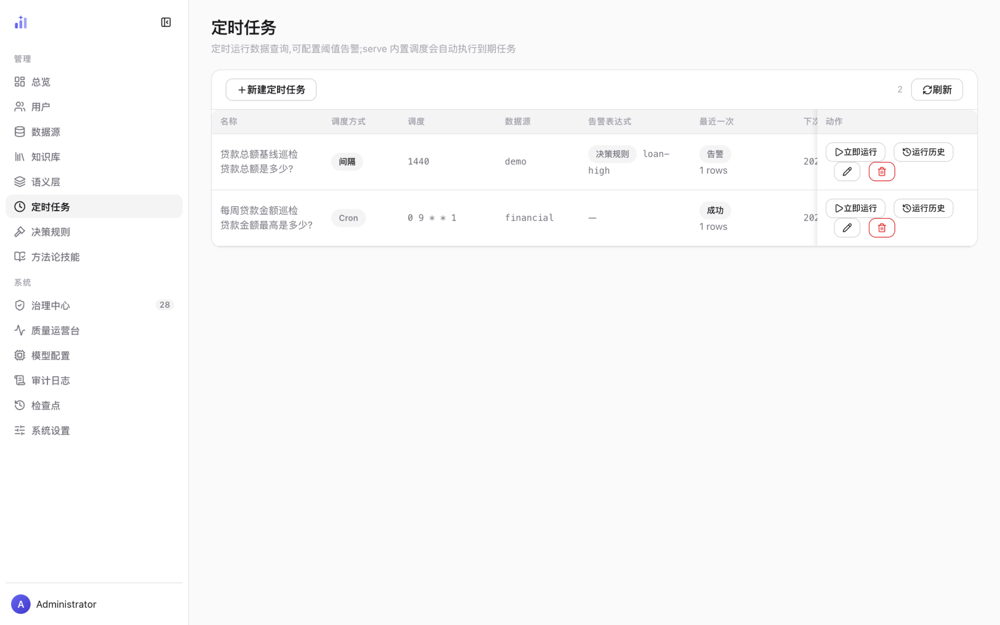
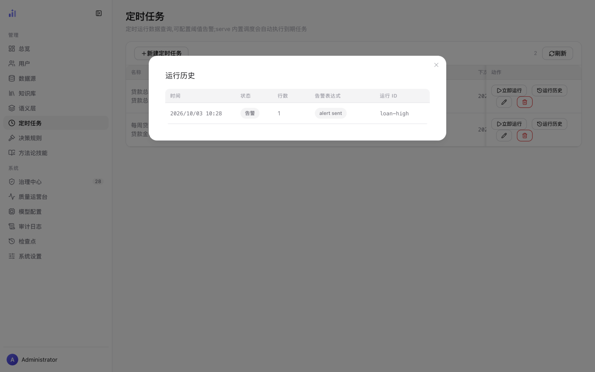
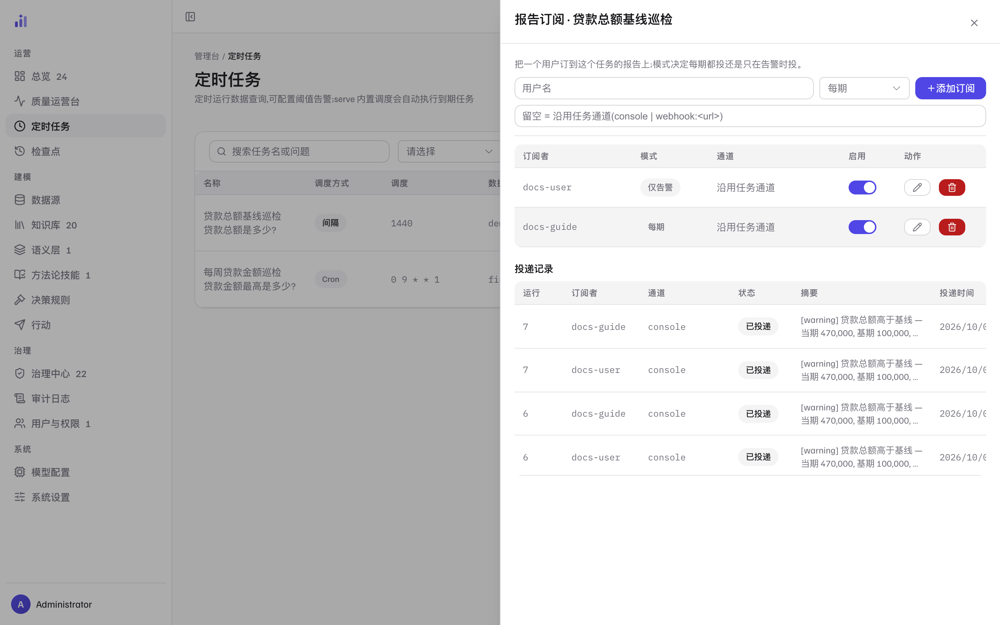
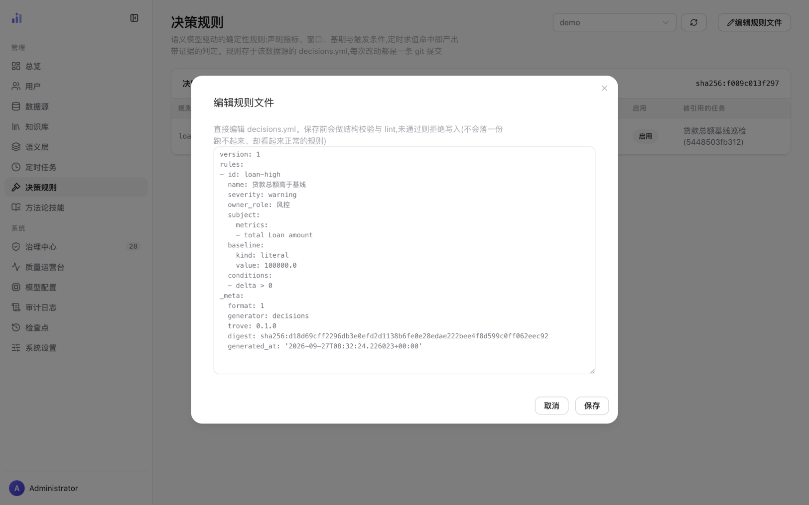
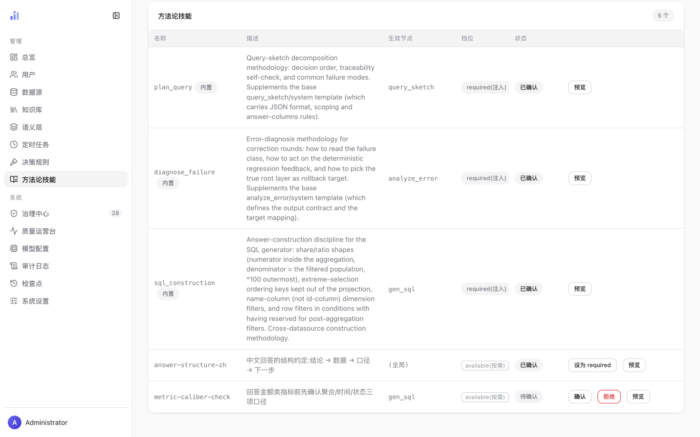
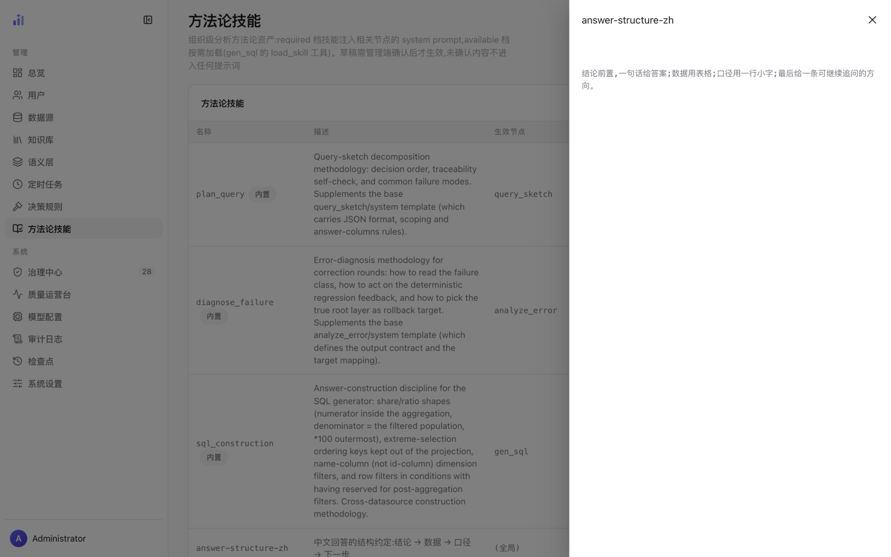

自动化与治理
三个不是「用户提问」的入口：定时任务按点跑问题、按阈值告警； 决策规则把阈值声明成确定性判定（零 LLM，每条判定带证据）； 方法论技能沉淀组织自己的分析与表述约定，注入生成链路。
定时任务
一个定时任务 = 名称 + 问题 + 数据源 + 调度。
到点后 serve 内置的调度器自动执行（默认 30 秒轮询一次到期任务），
结果落进运行历史；可以配告警，把「跑出来不对劲」主动推给管理员，
还能把每期报告订阅给团队成员（见报告订阅）。

1 2 3 4 5 6- 1新建定时任务——打开创建对话框：名称、问题（自然语言，与用户端同一个提问框同等地位）、数据源、调度方式与告警配置。
- 2名称 + 问题——任务名下面一行就是它会去问的问题，也是运行历史里一眼能对上的标签。
- 3调度方式与调度——间隔（分钟数，如 1440 = 每天一次）或 Cron（五段表达式，如
0 9 * * 1= 每周一 09:00）。表格更右侧还有「下次运行」与启停开关两列——列多时横向滚动可见；开关停用后，「下次运行」列会标出「停用」。 - 4告警表达式列——两种求值路径在这里区分：显示决策规则徽标 + 规则名（如
loan-high）表示该任务改由决策引擎确定性求值（零 LLM，问题仅作标签，普通告警表达式不再生效）；没有规则的任务则显示告警表达式本身（形如row_count >= 5/value > 1000/col:amount < 10/no_rows/verdict == OK）。没有告警的任务显示—（图中第二条）。 - 5最近一次——最近一回运行的状态章（成功 / 告警 / 失败）与返回行数。状态是告警意味着任务跑成功了、但命中了告警条件——不是失败。
- 6动作列——立即运行（不用等调度，当场执行一次并记入历史，改完配置最常用的验证动作）、运行历史（见下一节）、订阅（把每期/告警报告订给团队成员，见报告订阅）、编辑、删除。
任务的主题域（可选）把这次提问收敛到语义模型声明的某个域 （口径见语义层 · 主题域）： 只答该域声明的数据范围，不限定则答整个数据源。 域引用的校验放在写任务时——名字不存在或域已过期，保存直接被拒： 任务按表天天跑，一个悬空引用会以同样的方式失败到永远，不能留给运行期去发现。 决策规则任务例外：判定主体由规则声明，主题域对它无操作。
交互式提问里需要人工确认的环节（HITL），在定时任务里自动放行——调度器不会停下来等人。
因此定时任务适合口径稳定、不需要中途改问的问题；把「还得看一眼才敢信」的问题留给用户端。
另外：serve 自带内置调度，不要再同时运行 trove-cli schedule --daemon，
否则任务会被执行两遍。
运行历史：每次跑完都留一条账

1 2 3 4 5- 1时间——该次运行的开始时刻。
- 2状态——成功 / 告警 / 失败。三种状态互斥且穷尽：告警是「正常跑完但命中条件」，失败是「没跑成」。
- 3行数——本次查询返回的行数。
- 4告警表达式列在历史里回答的是「告警发出去没有」——
alert sent= 真推送了；—= 没发（没触发、冷却期内被去重、推送失败都会是「—」，图中前三条即冷却去重）。 - 5运行 ID——本次运行的判定标识。决策规则任务显示规则 id（图中
loan-high），普通任务显示执行标识；对不上号时用它去决策规则页查。
报告订阅：让结果主动找到人
任务跑完，除了管理员在运行历史里翻，还可以订出去： 在任务的「订阅」抽屉里把一个用户订到报告上，每次运行完成后按订阅模式投放。 被订的人在自己的「我的订阅」页看到订阅、随时退订—— 收不收由收件人自己决定，不是只管发不管收。

1 2 3 4- 1添加订阅——用户名 + 模式（每期 / 仅告警）+ 可选通道；通道留空即沿用任务通道。
- 2一条订阅——订阅者、模式芯片与这条订阅实际生效的通道。
- 3启停与编辑 / 删除——管理员在这里调整；收件人也能在自己的「我的订阅」页退订。
- 4投递记录——每次投递一行账（订阅 × 运行唯一）：运行号、通道、状态、消息摘要与时间。
| 要素 | 口径 |
|---|---|
| 模式 | 每期——每次运行都投；仅告警——只有这次运行触发告警才投。选了「仅告警」，「平静的每天」等于零打扰 |
| 通道 | 订阅可以带自己的通道；留空 = 沿用任务通道（console 或 webhook:<url>），两者都空则落到 console。投放链路上每一环都是显式的，没有一处默认行为藏在代码里 |
| 投递记录 | 每次投递留一行账：已投递 / 投递失败 + 原因 + 消息摘要 + 时间。一次运行对一条订阅至多一条记录（订阅 × 运行唯一），补投也不会重复轰炸 |
通道坏了（订阅里残留了非法通道串、webhook 超时）记「投递失败」+ 原因， 不抛异常、不改变任务本身的成败——投递是运行的下游， 不能倒过来拖垮运行。但失败一定留痕：静默跳过会让「订了却从没收到」 看起来像订阅没生效，而不是一条坏配置。
反过来，任务失败的那次运行也会照常投递——日报静默消失， 比收到一条失败通知更糟。
决策规则：声明式的确定性判定
决策规则把「什么情况算异常」写成声明（指标、窗口、基线、触发条件），
由确定性引擎求值——零 LLM。每条判定都带证据（编译器产出的 SQL 和判定依据的原始行），
因此一个结论可复现：同样的输入永远给同样的判定。
规则存在该数据源的 decisions.yml，每次改动都是一条 git 提交。

1 2 3 4 5 6decisions.yml 原文。- 1数据源选择器——决策规则属于某个具体数据源（阈值要落在它的语义模型里），切源即切文件。
- 2编辑规则文件——编辑器打开的是文件原文（含注释）；保存时会重新序列化，注释不再保留。规则表里「被引用的任务」列回答「这条规则谁在用」。
- 3写入门禁——保存前做结构校验与 lint，未通过则拒绝写入：不会落一份跑不起来、却看起来正常的规则。校验的硬指标就是「能不能编译」——和
POST /v1/semantic/query走同一条编译路径。 - 4规则的解剖——
subject用语义模型的词汇声明指标与过滤（和用户提问的编译输入同形），baseline给基线（图中literal 100000.0），conditions写触发条件（图中delta > 0，即高于基线就触发）；severity与owner_role供告警分级与归口。_meta记录格式版本与生成信息，供工具链识别。 - 5保存——写盘成功即一条 git 提交，改错了可以回滚；保存失败时 lint 的具体原因会留在对话框里，不用重开。
- 6规则表（对话框背后）——严重度 / 窗口 / 触发条件 / 启用 / 被引用的任务；卡片标题旁的
sha256:…是文件内容摘要，文件动没动一眼可查。
一条无法求值的规则（窗口解析不了、指标在语义模型里没声明、数据集没有时间字段）会以错误浮出， 而不是安静地「一切正常」——静默不触发的任务和健康任务在表面上没有任何区别， 所以这里宁可吵：不知道就说不知道，绝不假装判定过。
方法论技能：组织自己的分析约定
技能是跨数据源的方法论资产：怎么拆解查询、怎么诊断失败、组织要求的口径与表述方式。 两个来源：内置技能随代码发布（只读），组织技能由管理端起草与确认。 技能草稿确认后才生效——未确认的内容不进入任何提示词； 已确认的可以颗粒停用（暂停投递、不撤确认，见 Skills · 颗粒停用）。

1 2 3 4 5 6- 1总数章——当前技能数与卡片标题同排；列表把内置与组织技能混排，靠「内置」章区分。
- 2内置章——随代码发布的技能（只读，不提供确认/拒绝动作）。组织技能没有这个章，可被管理端处置。
- 3生效节点——技能挂在哪个生成环节：
query_sketch（规划）/analyze_error（失败诊断）/gen_sql（生成）；「（全局）」表示对所有环节生效。 - 4档位——四种（两种注入 + 两种断言，见下表）。
- 5状态——已确认 / 待确认（另有「已停用」态，经管理 API 颗粒停用）。待确认的草稿不进任何提示词，确认才生效，拒绝即删除草稿。
- 6行内动作——待确认行给出「确认 / 拒绝」；已确认行可切换档位（「设为 required」/ 反向切回 available）并随时「预览」。
| 档位 | 注入方式 | 适合放什么 |
|---|---|---|
| required（注入） | 全文注入生效节点的系统提示词 | 每次都必须遵守的硬约定：规划方法、诊断步骤、输出结构的组织标准 |
| available（按需） | 只在生成环节广告一行描述；模型判断需要时才用 load_skill 工具加载全文 | 场景性的方法论：命中才用，不占每次提示词的预算 |
| validator（结果断言） | 不注入提示词——在结果校验环节零 LLM 执行声明式断言 | 可机械判定的输出硬约束；在 SKILL.md 里手写，界面不提供切换 |
| guard（SQL 断言） | 不注入提示词——在 SQL 执行前（授权门之后）零 LLM 执行声明式断言 | 组织不可让步的写法底线（如「聚合查询必须带 WHERE」）；同样在 SKILL.md 里手写，界面不提供切换 |

1 2- 1技能名——
answer-structure-zh：一条中文回答的结构约定。 - 2正文——「结论前置，一句话给答案；数据用表格；口径用一行小字；最后给一条可以继续追问的方向。」确认之前先用预览核对措辞：这段文字会逐字进入模型上下文，写含糊等于没写。
技能承载跨数据源的方法论（怎么规划、怎么诊断、组织的口径与表述约定）； 某个数据源的事实（表、字段、枚举值、指标的算法）属于知识库与语义模型—— 放错了地方，换个数据源就会误导生成。
相关页面
| 你想做的事 | 去哪一页 |
|---|---|
| 规则触发之后：提案、审批与外送回执 | 行动与审批 |
| 看规则里的指标 / 窗口在语义模型里怎么声明 | 语义层治理 |
| 审批知识草案、管理 KB 资产 | 知识库运营 |
| 看告警与待办汇总 | 管理台总览 · 待办队列 |
| 部署与调度配置（serve 内置调度、轮询间隔） | 部署与运维实操 |
本页截图为真实界面（隔离的演示实例，数据是内置 BIRD 金融演示库）；
可用前端仓库里的 npm run shots 重新生成，_manifest.json 记录每张图的来源提交。